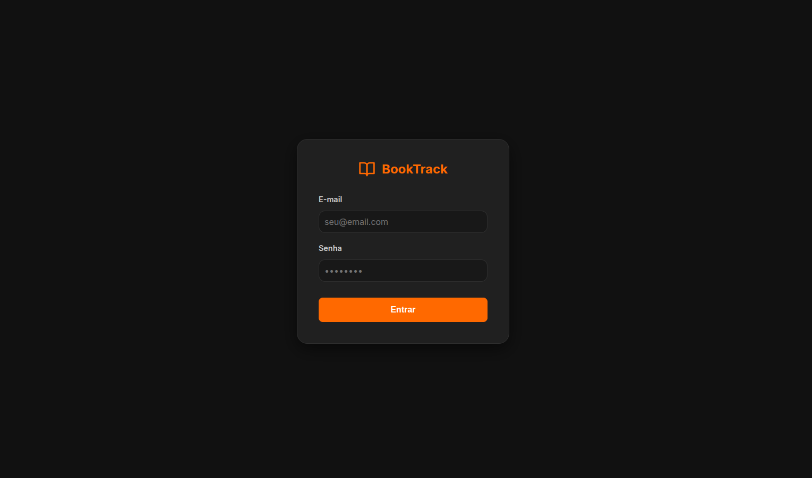
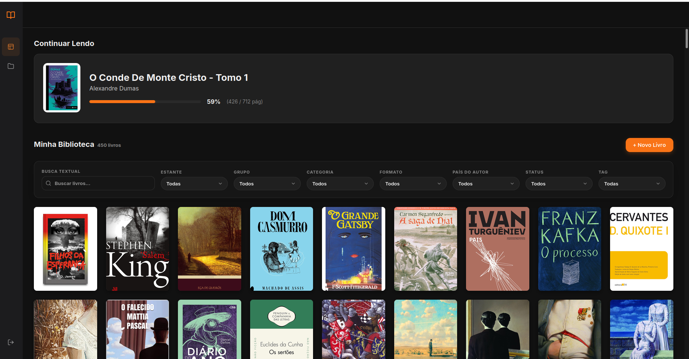
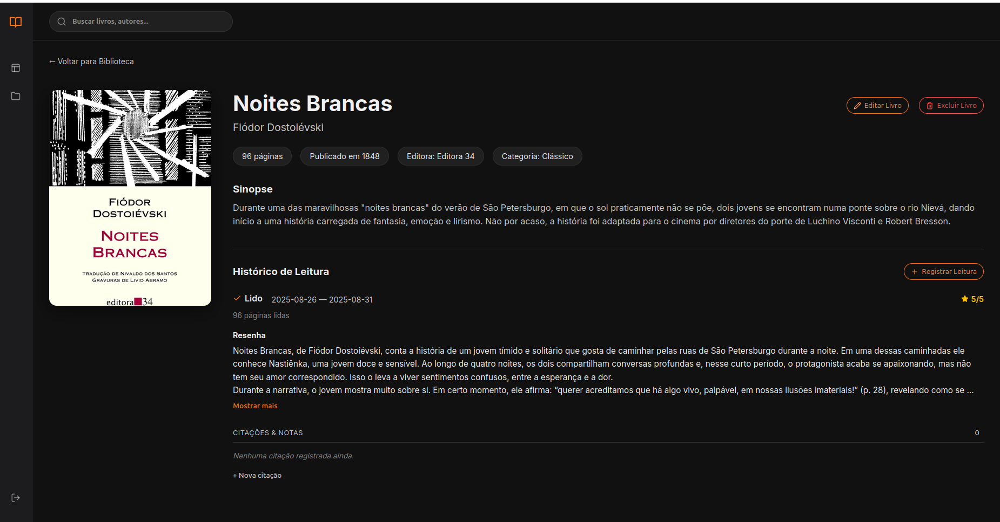
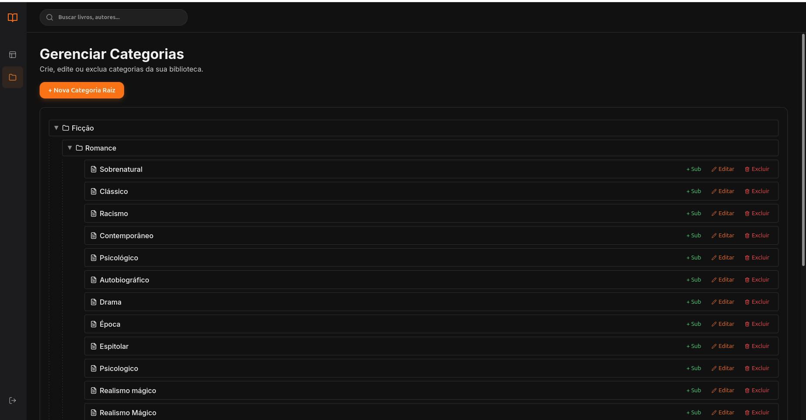

Contexto
Camada de apresentação do BookTrack: em vez de um frontend desacoplado (React/Vue consumindo a API via JavaScript), a escolha foi um app Django server-side, renderizando as páginas diretamente e chamando a API FastAPI internamente. É uma decisão deliberada para praticar integração entre dois frameworks Python com responsabilidades bem separadas - Django cuidando de views e templates, FastAPI cuidando de regra de negócio e dados.
Como se conecta ao backend
O app Django atua como cliente da API FastAPI: cada view faz requisições HTTP autenticadas para os endpoints do BookTrack API e renderiza o resultado em templates server-side - sem duplicar regra de negócio, sem acesso direto ao banco de dados.
Capturas de tela




Estrutura do projeto
books_ui/- app Django com as views e a lógica de apresentação do acervotemplates/- templates server-side renderizados pelo Djangoconfig/- configurações do projeto DjangoDockerfileedocker-compose.yml- containerização, alinhada à mesma abordagem do backend